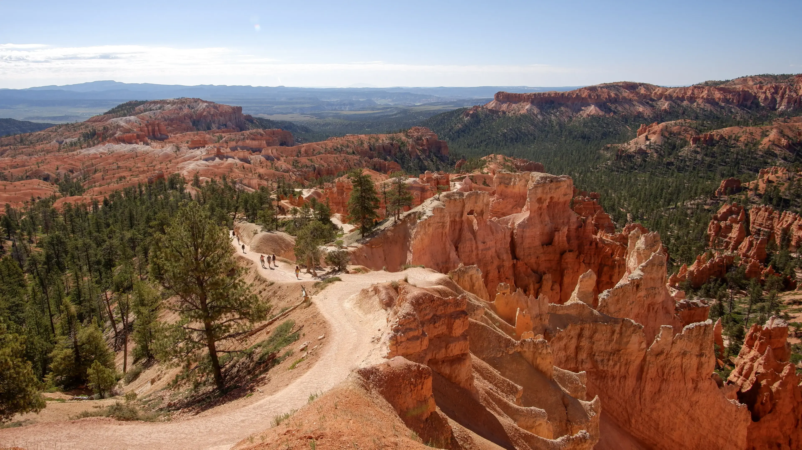
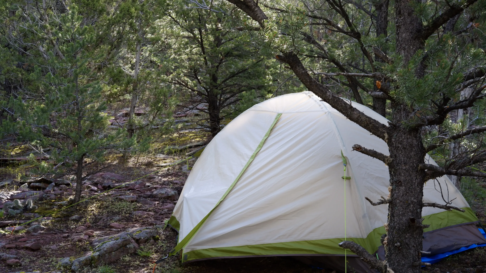

My name is Dharma Bellamkonda. I’m a person living in Utah.

Note: My face is obscured online to make it harder for scammers using generative AI to impersonate me to my friends and family.
I am a software engineer. Currently, I’m a Senior Software Engineer at Planet Labs, a satellite imaging data company.
Previously, I was a Lead Cloud Engineer at Adobe. Before that, I was a Linux Engineer at Maverik.
My specializations include distributed systems, cloud infrastructure, production operations, incident management, and security & compliance.
I’m an avid adventure motorcyclist. I enjoy touring by motorcycle and motocamping.

I try to go on at least one big motorcycle trip each year.
I also do most of my own wrenching and maintain technical documentation on my BMW F750GS.
I also work on cars. I have a modifed DC5 that I have driven in SCCA Autocross events.
I like to combine photography with my other hobbies. I shoot with a Fujifilm mirrorless camera, usually with a prime or wide angle lens. I really enjoy taking photos while camping or hiking, although I still have a lot to learn.


I’m a fan of Arch Linux. I have a git repo with my configuration.
I have a lifelong interest in aviation, and satisfy it with flight simulators. I have two related hobby projects: a mod for a popular flight simulator, and a website about the technical side of the hobby.
My friends and I play tabletop wargames to spend more time offline. We mostly play Trench Crusade, with some Warhammer 40k mixed in. The painting side of the hobby is a nice way to relax in the evenings, listening to music and chilling out away from computers.
I’m also into the usual nerdy range of hobbies: video games, books and podcasts, comic books/manga/manhua, electronic music.
You can get in touch with me by email at FIRST.LAST at gmail.com. I am not open to discuss new work at this time, but I’m happy to talk about other topics.
I am not active on social media because it is a net negative for my life and lifestyle.